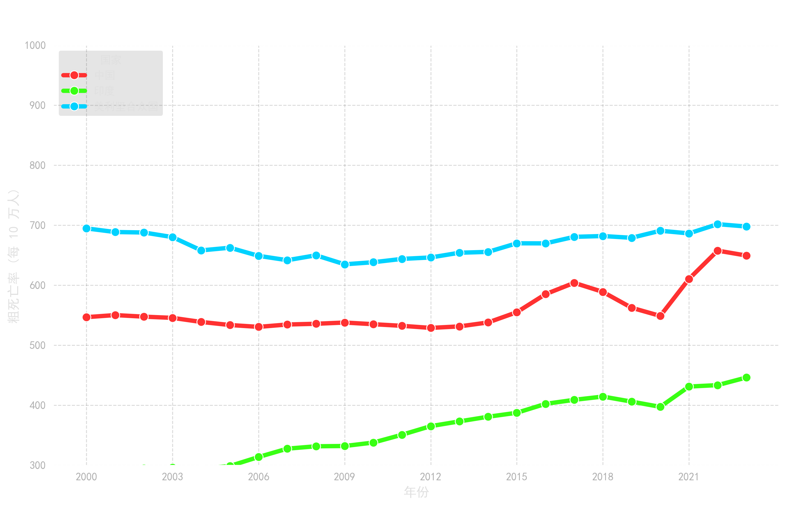
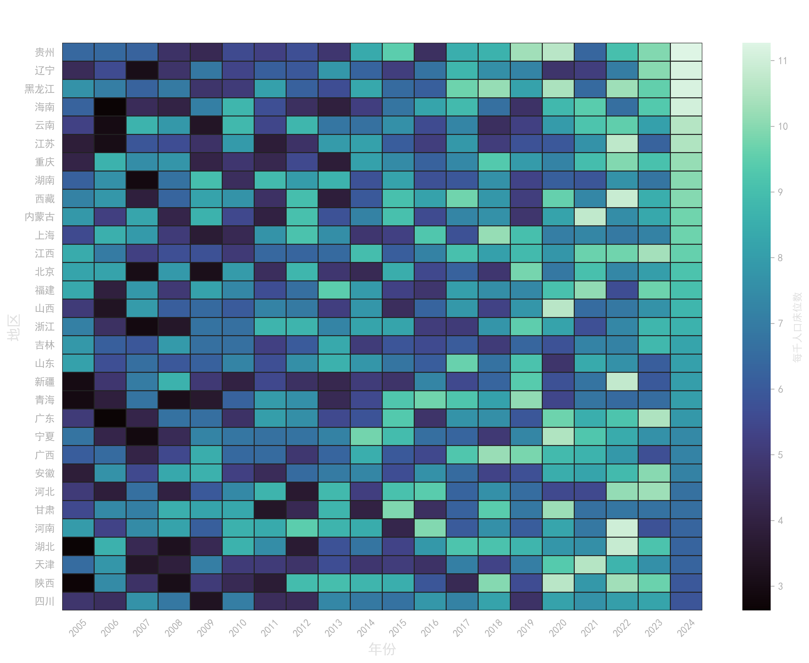

第一章：宏观视域下的成就与危机
过去二十年，中国经济腾飞驱动了国民预期寿命的跨越式增长。然而，随着老龄化加剧，核心慢性病致死占比快速攀升，凸显了对现有医疗资源进行跨省最优再分配的紧迫性。单纯依靠规模扩张的投入模式正面临挑战，资源的“效能转化”成为破局关键。

图1：经济-健康双跨越
中国走完发达国家百年的民生改善路径，经济腾飞支撑寿命飞跃 (1960-2024)。

图2：慢病负担严峻攀升
核心慢性病致死率快速攀升，成为医疗“最大吞金兽”，倒逼资源高质效配置。
第二章：数据基建与预处理沙盒
本研究构建了跨越全球宏观背景与国内省际面板的多维数据库。针对多源异构数据存在的统计口径不一、维度错位等问题，我们在特征工程阶段实施了正则清洗与逆透视重构。
🛠️ 核心预处理算法交互沙盒
为解决多源数据主键对齐问题，去除行政区划冗余后缀：
清洗结果：-
-
多源融合
整合 WDI、GBD 及国家统计局等权威数据。
-
向后结转
采用 ffill 算法平滑低频普查数据的时间空洞。
-
质量验证
清洗后实现核心窗口期 0 缺失值纯净样本。
第三章：全国医疗效能评估与空间诊断
基于 BCC-DEA 模型的输入导向分析，结合 K-Means 空间聚类，精准定位医疗资源配置的“效能洼地”。
1. 时空演变全景沙盘 (2005-2024)
2. 效能诊断与多维特征画像

全国资源效能热力阵列
直观定位 31 省份配置效率的高地与洼地，揭示资源错配的空间集聚特征。

聚类群体多维特征雷达
解构四大聚类群体的投入产出结构，为靶向施策提供量化的特征依据。
结论与靶向施策建议
全国省级医疗资源配置效率整体处于中高水平，但空间非均衡性亟待打破。
0.85
整体效能均值
多数地区规模效率接近1，效率短板源自配置结构而非规模不足。
靶向
低效洼地预警
“高投入-低转化”地区应控制盲目扩张，加速转向内涵式发展。
协同
跨省资源溢出
建立高能级省份对临近洼地的“医联体”跨区域技术帮扶机制。